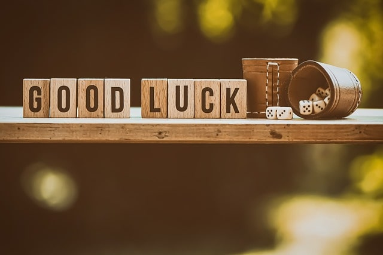

Know Thyself
AI-Based Face-Reading
Overview
Face-Reading
Bujeok
Contact
How can I make a fortune?
What is the best career option for me?
What makes me attractive to others?

How lucky am I today?
SHARE WITH FRIENDS!